前回の続きです☟☟
Docker を使ってみたかった話
目次
- やりたいこと
- VMware インストール
- Ubuntu に SSH をインストール
- Ubuntu と Windows を SSH 接続する
- Ubuntu に git や gh コマンド、Docker をインストールする
- 作業用リポジトリの作成、クローン
- 動かしてみる
- まとめ
やりたいこと
タイトルに色々詰め込んだらロングロング意味わからん文を生成してしまったので、以下に現状等を記載します。
問題点
GitHub Pages を利用して本サイトを公開しているが、 Push までしないとページに反映されないのが不便。どのように画面が出来上がっているか確認しながらブログを作成したい。
やったこと（失敗）
ブログのリポジトリをコピーした作業用リポジトリを作成。Docker を利用してコンテナを立てて、作業用リポジトリのデータをブラウザに表示できるようにした。
→ ファイル保存の度にブラウザに反映されるはずが、なぜか Commit までしないと反映されなかった。
※詳しくは前回の記事へ
失敗の原因
詳しい原因は突き止められなかったが、恐らく OS (Windows) の仕様によるものだと思われる。
→ OS を仮想マシンで Windows から Linux に変更したらできる？？
今回やること
- 仮想マシンを使用し、Windows 上で Linux (Ubuntu) を起動
- Windows と Ubuntu を SSH 接続
- git や gh コマンド、Docker を Ubuntu にインストール
- 「[アカウント名].github.io」のリポジトリと同一の内容のリポジトリ（作業用）を作成 → Ubuntu に clone
- Docker を利用して Web サーバを立て、作業用リポジトリ（ローカル）のデータをブラウザに表示できるようにする
こちらを実践してみたところ、私の環境では意図通りに「ファイルを保存する度にブラウザに変更が反映される」ようになったので、詳しい作業内容をこれから説明していきます。
※ Windows 側の操作は VS Code 内の Git Bash で行っているのでご承知おきください。
VM インストール
Windows 上で Linux を動かしたいので、それに必要な仮想化ソフトウェアを入れていきます。
今回は VMware を使用します。（VirtualBox はインストールが上手くいかなかった…なぜ…。）
-
下記サイトからインストーラーをダウンロード。
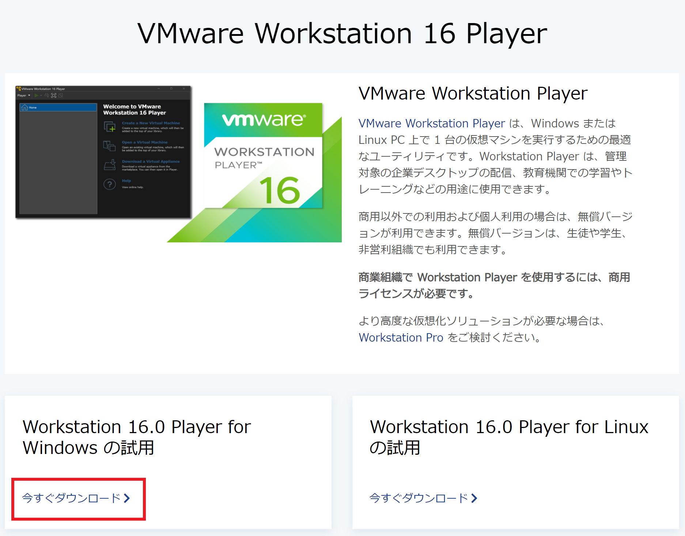
VMware Workstation 16 Player手順に沿ってインストールする。
-
新規仮想マシンを作成していく。
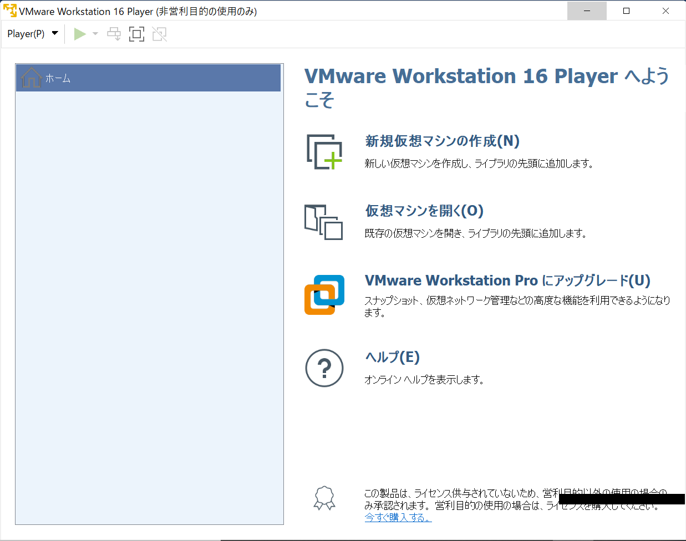
VMware Workstation 16 Player を起動すると下記画面が表示されるので、「新規仮想マシンの作成」を選択。
-
Ubuntu の ISO を下記サイトでダウンロード。
Download Ubuntu DesktopダウンロードしたISOイメージファイルを「インストーラディスクイメージファイル」に指定する。
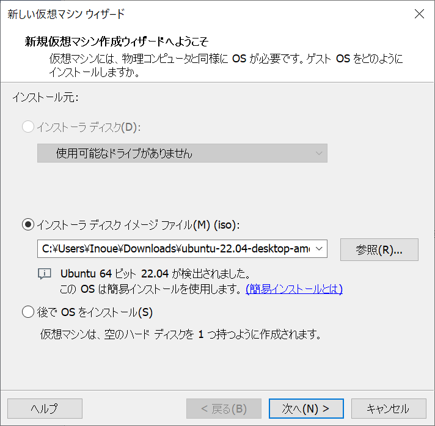
-
ユーザ名などを設定していく。
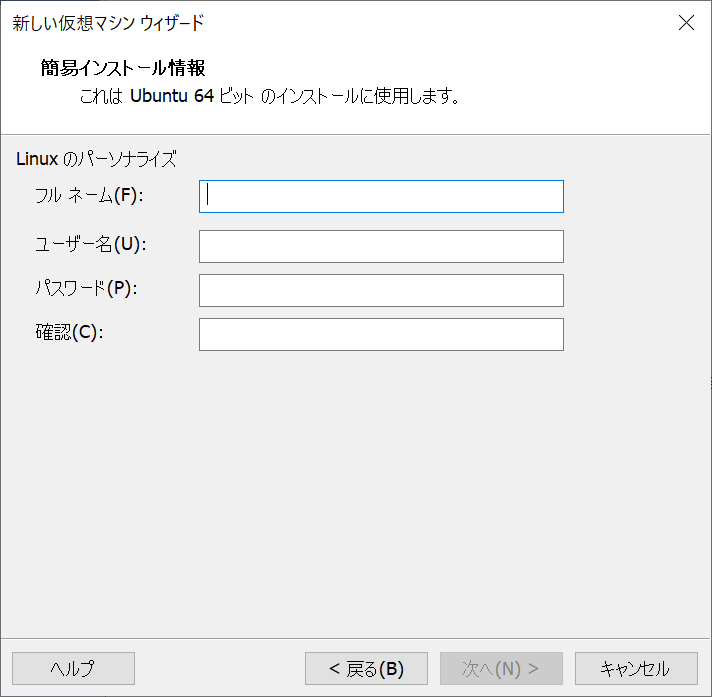
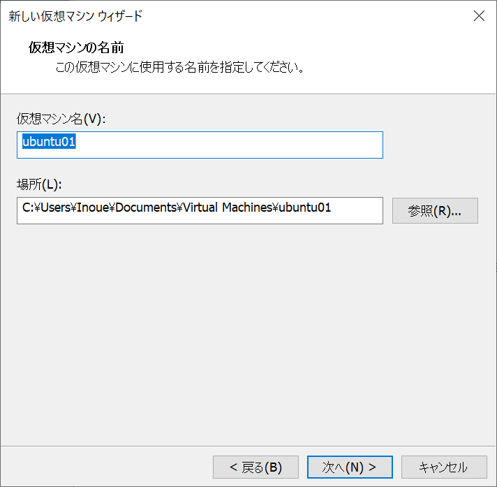
-
仮想マシンのディスクサイズを設定。
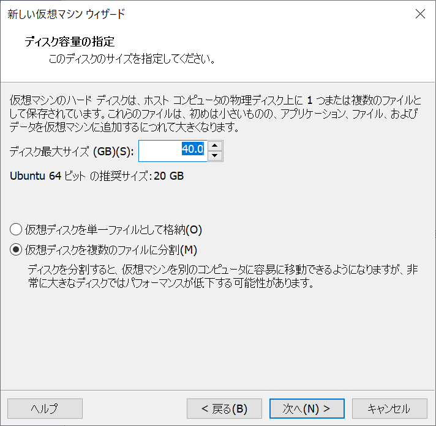
こちらは使用している PC のスペックに会わせて調整してください。
-
仮想マシンの設定完了！ 問題がなければ「完了」ボタンをクリックしましょう。
Ubuntu が起動します。 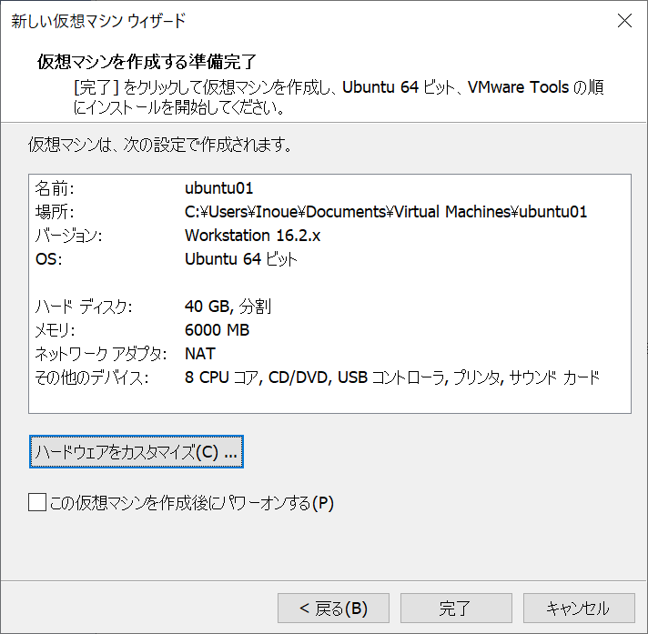
Ubuntu に SSH をインストール
初期設定が諸々完了したら、早速 Ubuntu のターミナルを開いてソフトウェアをインストールしていきます。
- パッケージリストを最新にする。
apt （Advanced Package Tool）はパッケージ管理をするコマンドである。
sodo をつけて root ユーザ = 管理者 として実行する。$ sodo apt-get update
-
SSH をインストール
$ sudo apt-get install openssh-serverこれでインストール完了！
以下のコマンドで SSH がインストールされていることを確認できます。
$ systemctl status ssh
Ubuntu と Windows を SSH 接続する
ここからは作業環境が Ubuntu なのか Windows なのか、ごちゃごちゃになりやすいので、気をつけながら説明していきます。
分かりにくかったらすみません。
-
Windows 側にインストールされている VS Code に Remote-SSH をインストールする。
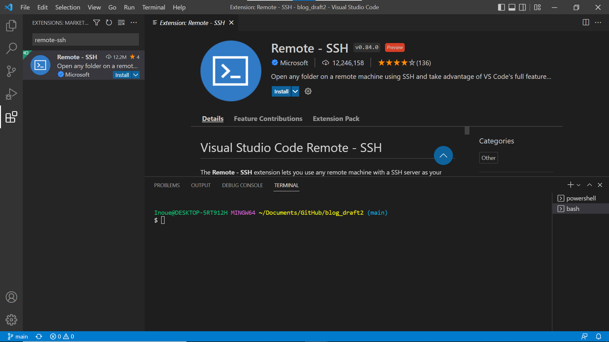Ctrl + Shift + Xで Extentions が開くので、検索窓に「remote-ssh」と入力し、Remote-SSH をインストールする。
-
対象のローカルリポジトリに移動し、Remote-SSH をインストールして現れた左下の緑色のマークをクリック。 すると画面上部にポップアップが表示されるので、「Connect to Host…」→「新規 SSH ホストを追加する」を選択する。
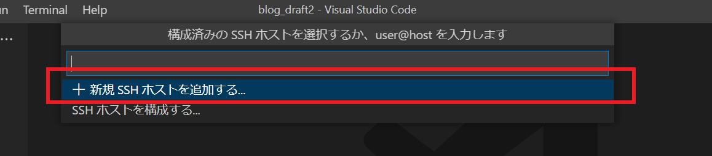
-
SSH 接続コマンドを入力する。
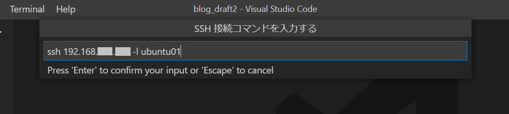ssh [Ubuntu の IPアドレス] -l [Ubuntu の User名]
Ubuntu の IP アドレスは、Ubuntu のターミナルに以下のコマンドを入力することで確認できます。$ ip addr show
- 更新する SSH 構成ファイルを選択する。
私の場合は~/.ssh/configのファイルを選択しました。 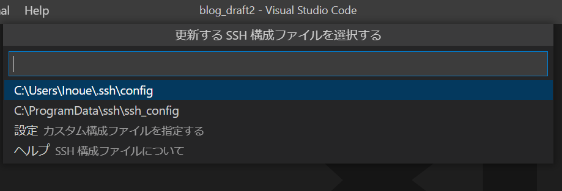
すると、右下にポップアップが表示されます。 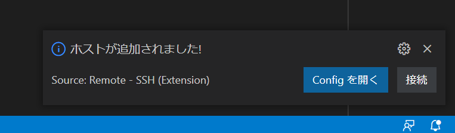
これで新規 SSH ホストの追加が完了しました！
-
画面左下の緑色のボタンをクリックし、「Connect to Host…」を選択、3 で設定した Ubuntu の SSH ホストを選択する。
（Ctrl + Shift + Pまたは View タブの Command Palatte を開き、Remote-SSH:Connect to Host…を選択しても同様の画面が表示されますよ～） 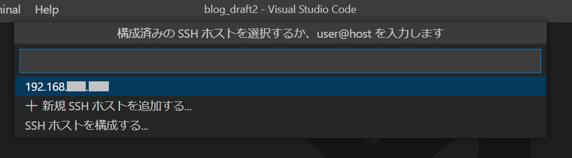 -
接続先の OS の選択を求められるので、今回は Ubuntu と接続したいため Linux を選択する。
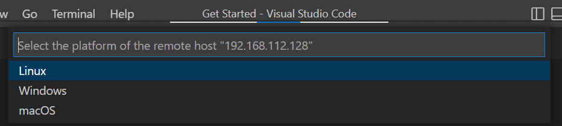
-
Ubuntu にログインする際のパスワードを入力する。
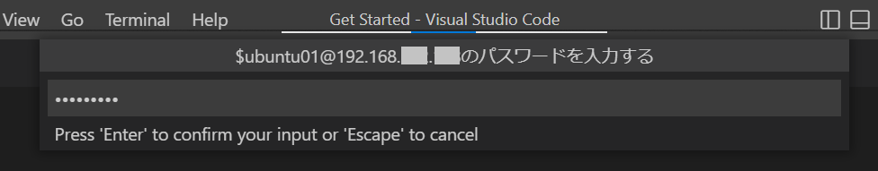
SSH 接続完了！！
Ubuntu に git や gh コマンド、Docker をインストールする
SSH 接続が完了したところで、Ubuntu に戻って作業に必要なものをインストールしていきましょう。
以下の作業は全て Ubuntu の ターミナルで行っております。
git コマンドインストール
- リストの更新
$ sudo apt update
- git をインストール
$ sudo apt install git
gh コマンドインストール
$ sudo apt install gh
Docker インストール
$ sudo snap install docker
作業用リポジトリの作成、クローン
Ubuntu と SSH 接続した、Windows 側の VS Code で以下の操作をしていきます。
「[アカウント名].github.io」と同じ内容のリポジトリを作業用リポジトリとして作成し、その作業用リポジトリを Ubuntu にクローンします。
$ gh repo clone [アカウント名]/[作業用リポジトリ名]
静的サイトジェネレータで HUGO を使用しているので、サブモジュール（HUGO のテーマ）を入れるために以下のコマンドを実行します。
$ git submodule update --init --recursive
そして Docker でコンテナを立てるために、docker-compose.ymlに Ubuntu の IPアドレスを設定しておきます。
（Ubuntu の IPアドレスは環境によって変わるので、.gitignore （Git の管理対象外とするファイル）で設定した方が便利かもしれません。）
これで作業環境構築完了！長かった！！
動かしてみる
環境が構築できたので、実際に意図通りの動きをするか確認です。
Ubuntu と SSH 接続した、Windows 側の VS Code のターミナル（bash）で Docker コンテナを立ち上げます。
$ docker-compose up
※バージョンによってはdocker-compose ではなく docker compose の場合もある。（docker コマンドに統一する動きがあるらしい）
次に ブラウザの検索欄にdocker-compose.ymlで指定したアドレス、ポートを張り付けて通信します。
[IPアドレス]:[ポート]
これでサイトが表示されると思います。
作業用リポジトリの内容を編集して保存をしたタイミングで、サイトも更新されます。
作業がひと段落したら、以下のコマンドで Docker コンテナを落としましょう。
$ docker-compose down
Docker の状況はdocker-compose ps で確認できます。
まとめ ー終わらない環境構築ー
今回は、GitHub Pages で作成されたサイトについて、仮想マシンとコンテナを使用して開発環境を構築しました。
ただこれで終わりではありません…。
作業用リポジトリの変更内容をメインの「[アカウント名].github.io」リポジトリに反映させる作業が残っています。
そちらは GitHub Actions を利用して行う予定ですので、この内容もいずれブログ記事に残したいと思っております。
ひとまずお疲れ様でした🍵
【追記】
☟作業用リポジトリの変更内容をメインの「[アカウント名].github.io」リポジトリに反映させる方法
[Windows向け]GitHub Pagesを使用したサイトの開発環境構築② ～GitHub Actions使ってみた～
ちゃんと書きました！ ここまでやれば環境構築完了です。
こちらのブログは初心者エンジニアが勉強の記録やアウトプットの一環として執筆しております。
内容に誤りがある可能性が多大にありますのでご了承ください。